Introduction
Measure your health values once a day, preferably at the same time, and answer the symptom questionnaire on your patient tablet. We recommend taking measurements immediately after getting up. In this way, the values are comparable day by day and your health condition can be evaluated in the best way.
Your measurement results are securely transmitted to medical professionals and your attending physician in accordance with data protection regulations.
Make sure your devices are charged. To charge your devices, use the supplied charging cables to charge your patient tablet and Blood pressure/ECG monitor. Please use the supplied AAA batteries for the scale. Before using the scale, remove the battery protection lid on the backside.
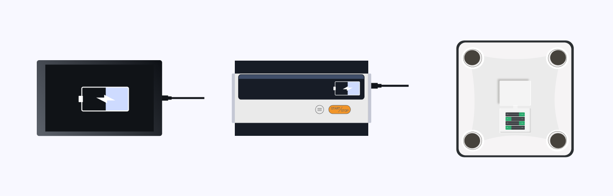Starting the tablet
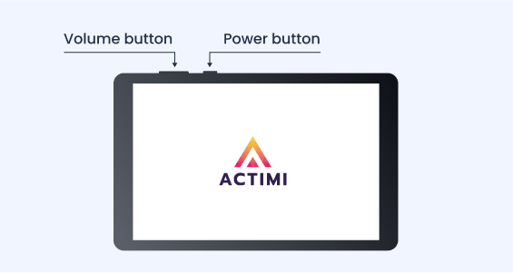Turn your patient tablet On or Off by briefly pressing the Power button on the side. The ACTIMI Telecare App will launch automatically. If your patient tablet does not work, make sure it is charged and hold the button for 3 seconds.
During measurements, the patient tablet must be switched On and in the same room as the ECG monitor and scale for successful transmission of measurement values.
After measurements, you can turn Off the patient tablet by briefly pressing the Power button.
Completing the Questionnaire
- Tap on the start button of the Questionnaire on the “Tasks” screen. 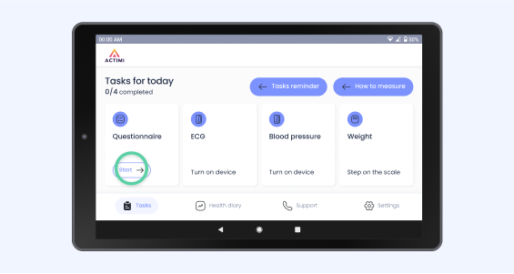
- Then tap Yes or No depending on how you feel. 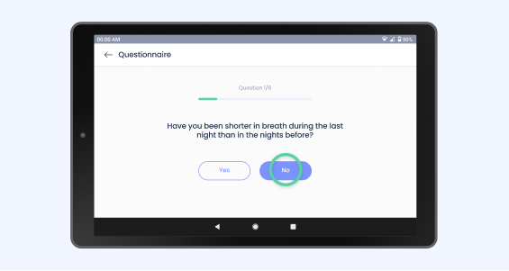
- After answering the questions, just click finish and you are done with your first task.

Measuring ECG
Before using the ECG function, pay attention to the following points to obtain precise measurements:
- The ECG electrode should be positioned directly against the skin.
- If your skin or hands are dry, moisten them using a damp cloth before measurement.
- If the ECG electrodes are dirty, remove the dirt using a soft cloth or cotton swamp dampened with disinfection alcohol.
- While taking measurement, do not touch your body with the hand with which you are taking measurement.
- Please note that there must be no skin to skin contact between your right and left hand. Otherwise, the measurements cannot be taken correctly.
- Stay still during the measurement, do not speak and hold the device still. Movements of any kind will falsify the measurements.
- Take measurement when sitting and not when standing.
To start an ECG recording
- Turn on the device by briefly pressing the button. If it is not starting, check whether it is charged. 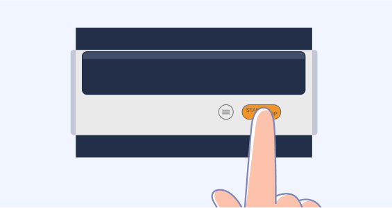
- Make sure that you see the same screen before starting. If not briefly press the button. 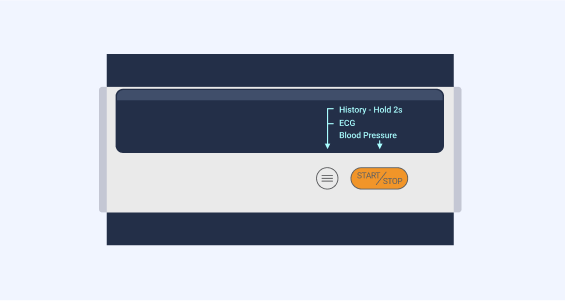
- Press the button on the device to start the measurement. Take the device into your palms as shown in the picture. Wait for 30 seconds, the result readings will be displayed. 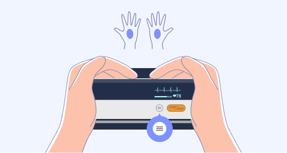
To start recording ECG again, press the button to return to the Home screen, then press the button.
Quality of your ECG measurement
The quality of the ECG measurement differs depending on the measurement method and the person. A good quality of the derivation is crucial for the assessment of your health status.
You can see the quality of the lead in your device display as you measure your ECG. Look for well-defined, even peaks in the heart trace.
Bad ECG measurement quality
Good ECG measurement quality
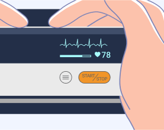Measurement methods
There are 4 methods to record ECG. Choose the “Hand — Hand” way of measuring. If you receive a poor lead ECG lead quality, try the following ECG measurement positions and choose the one with the best ECG lead quality in the future.
Hand-Hand
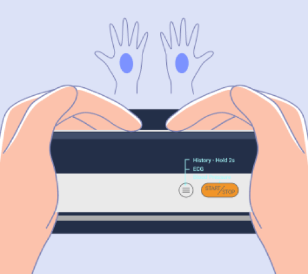Hand-Chest
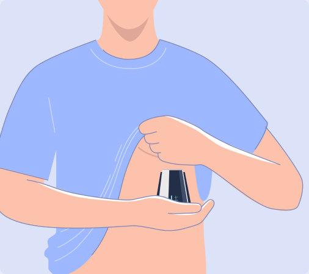Hand-Abdomen
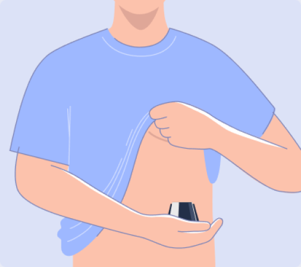Right hand-Left leg
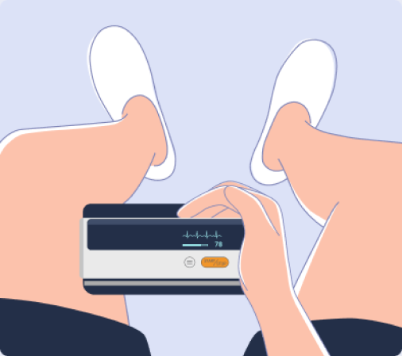Measuring Blood Pressure
To help ensure accurate measurements, follow these directions:
- Rest for at least 5 minutes before taking measurements.
- Stress raises blood pressure. Avoid taking measurements when stressed.
- Sit in a chair with your legs uncrossed and your feet flat on the floor. Place your arm on a table, so that the cuff is level with your heart.
- While taking measurements, you should remain still, do not talk and not squeeze the cuff.
To start a Blood Pressure measurement
- Turn on the device by briefly pressing the button. If it is not starting, check whether it is charged.
- Make sure that you see the same screen before starting. If not briefly press the button.
- Wrap the cuff around the upper arm, about 1 to 2 cm above the elbow joint, as shown on the picture. Place the cuff directly against the skin, as clothing may cause a faint pulse and result in measurement errors. 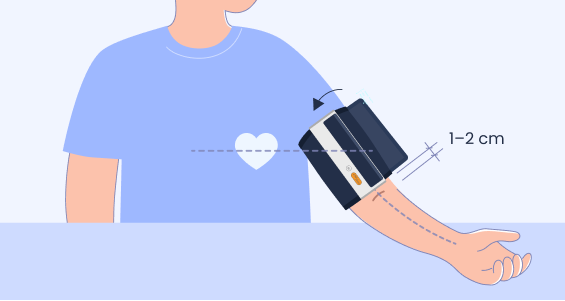
- Press the to start taking blood pressure measurement. The monitor will automatically deflate the cuff slowly while taking measurements. A typical measurement takes about 30 seconds. 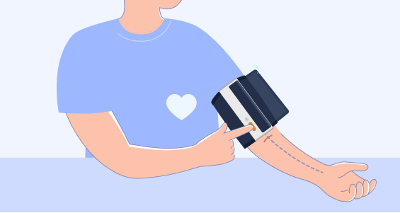
- The readings will be displayed when the measurement is finished.
You can press the button again to stop the blood pressure measurement.
After taking measurement
The monitor will automatically deflate the cuff once finished taking measurements. Press the button to turn the power off after taking measurements. Remove the cuff.
Measuring Weight
- Place the scale on a hard, flat surface. Using the scale on a soft surface like carpet or linoleum may affect the accuracy of the scale readings.
- To ensure weighing accuracy, please gently step on the scale to wake it up and wait at least 10 seconds before weighing on the scale. You must also wake up the scale if it has been moved.
- Stand on the body scale until you can see your weight in the scale display. As soon as the value in the device display is fixed and not flashes, the measurement is completed.
Thank you and all the best